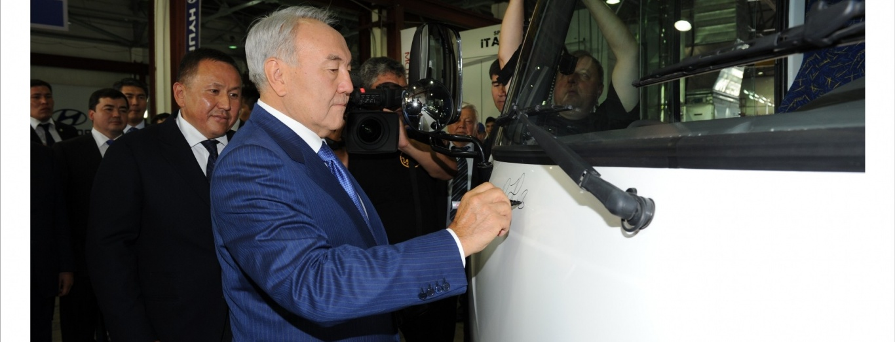

ALMATY MOTORS
Hyundai Trans Auto

Мощность производства грузовых автомобилей и автобусов Hyundai составляет 10 000 единиц в год. Территория предприятия составляет 10,2 га, площадь предприятия, включая территорию свободного склада, составляет 16 855 кв.м.
Доля казахстанского содержания в проекте на 2011 год составляла 5%, в течение пяти лет за счет комплектации отечественным навесным оборудованием, таким как бортовые кузова, тентованные борты, изотермические и промтоварные фургоны, уровень локализации планируется поднять до 30%.
Открытие завода позволило создать более пятидесяти рабочих мест, а к концу 2015 года компания планирует создать еще более двухсот рабочих мест, занятых на производстве и обслуживания автомобилей.
Модельный ряд представлен техникой грузоподъемностью от 2 до 20 тонн на базе шасси Hyundai HD 45, HD 65, HD 72, HD 78, HD 120, HD 170, HD 260, HD 270 – это грузовики, бортовые, фургоны, самосвалы, рефрижераторы, мусоровозы, эвакуаторы, автовышки, манипуляторы и другая коммунальная и специализированная техника. Они станут оптимальным предложением по соотношению цены и качества. По сравнению с автотехникой других производителей коммерческая техника марки Hyundai является наиболее конкурентоспособной. Она показала свою экономическую выгоду в эксплуатации по сравнению с российской продукцией, так как основными преимуществами техники Hyundai являются высокое качество, приемлемая цена, выгодные сроки и условия поставки, а также обеспечение гарантии.
В 2012 году завод Hyundai Trans Auto приступил к сборке и выпуску пассажирских автобусов Hyundai County пассажировместимостью 18-28 посадочных мест. Автобусы поддерживают стандарт ЕВРО 4, что существенно повлияет на улучшение экологической среды. Также на базе автобуса County предприятие наладило производство реанимобиля County Ambulance.
В 2013 году были выпущены первые кареты скорой помощи на базе микроавтобуса Hyundai H-1.
В 2014 году на территории завода стартовала сварка и покраска кузовов автобусов County, что позволяет увеличить долю местного содержания до 50%.
ТОО «Hyundai Trans Auto» включено в реестр свободных складов Республики Казахстан за № КБК-1-5-9/11748 от 24.10.2011 г. под номером №0000042.